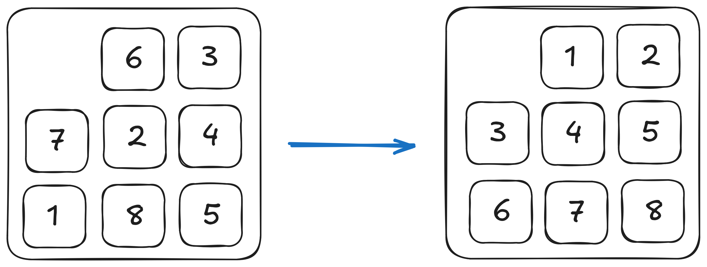
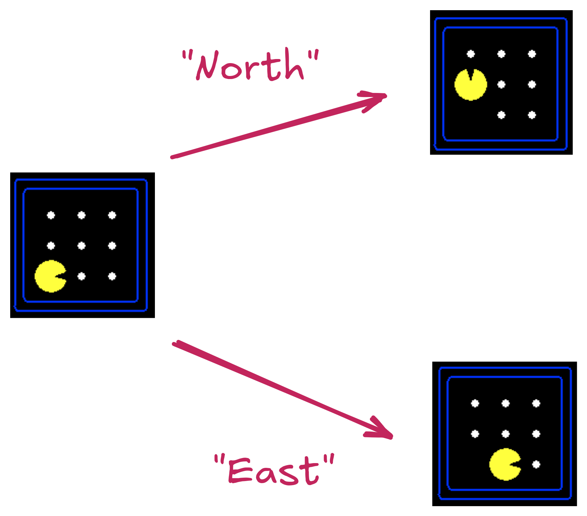

Search
CSCI 4511/6511
Good Afternoon
- Good afternoon
Announcements
- Homework 1 is due on 7 February at 11:55 PM
- Automatic extensions
- Pay attention!
Why Are We Here?
- We’re designing rational agents!
- Perception
- Logic
- Action
In Practice
- Environment
- What happens next
- Perception
- What agent can see
- Action
- What agent can do
- Measure/Reward
- Encoded utility function
Reframed
- Building a model of the real world
- Model is based on sensor inputs
- Model is flawed
- Solve problems on the model
- Take actions based on solution
- Model close to reality \(\rightarrow\) solution useful
- Else: ü´†
Search: Why?
- Fully-observed problem
- Deterministic actions and state
- Well defined start and goal

State
What is the state space?
State
Other Applications
- Route planning
- Protein design
- Robotic navigation
- Scheduling
- Science
- Manufacturing
Not Included
- Uncertainty
- State transitions known
- Adversary
- Nobody wants us to lose
- Cooperation
- Continuous state
Who Is The Pac-Man?

Search Problem
Search problem includes:
- Start State
- State Space
- State Transitions
- Goal Test
State Space:

Actions & Successor States:

Tour of Croatia
Tour of Croatia
State Space Size?
- Pacman positions, Wall Positions
- Food positions, Food Status?
- Ghost positions, Ghost Status?
State Space Graph

Search Trees
Graph:
Tree:
Node Representation
Graph:
Tree:
Let’s Talk About Trees
- For any non-trivial problem, they’re big
- (Effective) branching factor
- Depth
- Graph and tree both too large for memory
- Successor function (graph)
- Expansion function (tree)
How To Solve It
Given:
- Starting node
- Goal test
- Expansion
Do:
- Expand nodes from start
- Test each new node for goal
- If goal, success
- Expand new nodes
- If nothing left to expand, failure
Best-First Search

Frontier Expansion
Frontier Expansion
- Frontier: nodes “currently” expanded
- If no frontier node is goal, need to add to frontier
- How?
- Can we have cycles?
- How do we deal with cycles?
Queues & Searches
- Priority Queues
- Best-First Search
- Uniform-Cost Search1
- FIFO Queues
- Breadth-First Search
- LIFO Queues2
- Depth-First Search
Search Features
- Completeness
- If there is a solution, will we find it?
- Optimality
- Will we find the best solution?
- Time complexity
- Memory complexity
Breadth-First Search
FIFO Queue
Complete
Optimal
\(O(b^d)\)
Nice features for equal-weight arcs:
- Lowest-cost path first
- \(reached\) collection can be a set
Breadth-First Search
Uniform-Cost Search
Non-uniform costs \(\rightarrow\) BFS inappropriate.
Depth-First Search
- “Family” of searches
- LIFO stack
- Problems?
Uninformed Search Variants
- Depth-Limited Search
- Fail if depth limit reached (why?)
- Iterative deepening
- vs. Breadth-First Search
- Bidirectional Search
How to Choose?
- Think about when the searches “fail”
- Think about complexity
- Do we need an optimal solution?
- Are we looking for “any” solution
Informed Search
It Is Possible To Know Things
üòå
It Is Possible To Know Things
Mid-Atlantic
DC Metro Area
Heuristics
heuristic - adj - Serving to discover or find out.1
- We know things about the problem
- These things are external to the graph/tree structure
- We could model the problem differently
- We can use the information directly
Best-First Search (reprise)
Greedy Best-First Search
- Heuristic \(h(n)\)
- \(n\) is the search-tree node
- \(h(n)\) estimates cost from \(n\) to goal
- Best-first search: \(f(n)\) orders priority queue
- Use \(f(n) = h(n)\)
- Complete
- No optimality guarantee
- (expected)
A* Search
- Include path-cost \(g(n)\)
- \(f(n) = g(n) + h(n)\)
- Complete (always)
- Optimal (sometimes)
- Painful \(O(b^m)\) time and space complexity
Choosing Heuristics
- Recall: \(h(n)\) estimates cost from \(n\) to goal

- Admissibility
- Consistency
Choosing Heuristics
- Admissibility
- Never overestimates cost from \(n\) to goal
- Cost-optimal!
- Consistency
- \(h(n) \leq c(n, a, n') + h(n')\)
- \(n'\) successors of \(n\)
- \(c(n, a, n')\) cost from \(n\) to \(n'\) given action \(a\)
Consistency
Consistent heuristics are admissible
- Inverse not necessarily true
Always reach each state on optimal path
Implications for inconsistent heuristic?
Is Optimality Desirable?
Is Optimality Desirable?
- Yes
Is Optimality Desirable?
- Yes, but it isn’t always feasible
- A* search still exponentially complex in solution length
- Optimality is never guaranteed “inexpensively”
- We need strategies for “good enough” solutions
Satisficing
satisfy - verb - To give satisfaction; to afford gratification; to leave nothing to be desired.1
suffice - verb - To be enough, or sufficient; to meet the need (of anything)2
Weighted A* Search
- Greedy: \(f(n) = h(n)\)
- A*: \(f(n) = h(n) + g(n)\)
- Uniform-Cost Search: \(f(n) = g(n)\)
…
- Weighted A* Search: \(f(n) = W\cdot h(n) + g(n)\)
- Weight \(W > 1\)
Reducing Complexity
- Frontier Management
- Elimination of \(reached\) collection
- Reference counts
- How else?
- Other searches
Iterative-Deepening A* Search
“IDA*” Search
- Similar to Iterative Deepening with Depth-First Search
- DFS uses depth cutoff
- IDA* uses \(h(n) + g(n)\) cutoff with DFS
- Once cutoff breached, new cutoff:
- Typically next-largest \(h(n) + g(n)\)
- \(O(b^m)\) time complexity üòî
- \(O(d)\) space complexity1 üòå
Beam Search
Best-First Search:
- Frontier is all expanded nodes
Beam Search:
- \(k\) “best” nodes are kept on frontier
- Others discarded
- Alt: all nodes within \(\delta\) of best node
- Not Optimal
- Not Complete
Recursive Best-First Search (RBFS)
- No \(reached\) table is kept
- Second-best node \(f(n)\) retained
- Search from each node cannot exceed this limit
- If exceeded, recursion “backs up” to previous node
- Memory-efficient
- Can “cycle” between branches
Recursive Best-First Search (RBFS)

Heuristic Characteristics
- What makes a “good” heuristic?
- We know about admissability and consistency
- What about performance?
- Effective branching factor
- Effective depth
- # of nodes expanded
Where Do Heuristics Come From?
- Intuition
- “Just Be Really Smart”
- Relaxation
- The problem is constrained
- Remove the constraint
- Pre-computation
- Sub problems
- Learning
References
Stuart J. Russell and Peter Norvig. Artificial Intelligence: A Modern Approach. 4th Edition, 2020.
Stanford CS231
UC Berkeley CS188